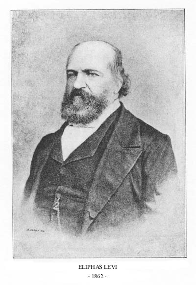
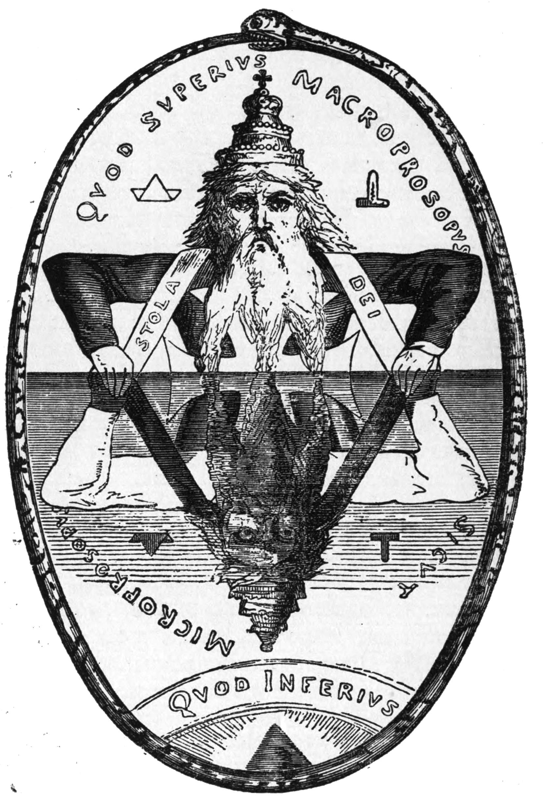

エゴの果てには化け物が完成するので、
私は円環の外に立つことにした
箭内宏紀｜実存科学研究所

エリファス・レヴィ（1862年）

『高等魔術の教理と儀式』より
ソロモンの大いなる象徴
天命を悟り、日々全うせよ。
先日、Xのタイムラインにある画像が流れてきた。
モノクロの版画。円環の中に、王冠を戴いた老人と、その真下に上下反転した悪魔的な存在が描かれている。両者は十字架を共有し、鏡像のように向き合っている。
エリファス・レヴィの図像だった。レヴィは19世紀フランスのオカルティストで、1854〜56年に著した『高等魔術の教理と儀式』の中で、ヘルメス主義、カバラ、錬金術の諸原理を統合した図版を多数制作した。
彼はこれらの図像を「崇拝の対象」としてではなく、宇宙の対立原理の均衡を視覚化した「哲学的図解」として描いたとされる。
上なるものは下なるものの如し（As above, so below）。
善と悪、光と闇、精神と物質。これらは分離した二項対立ではなく、一つの構造の表裏である──というのがこの図像の主張だ。
私はこの絵を見て、「オカルトだとは思わない」と感じた。あくまでも論理構造として捉えれば、これは正しい。
そしてここから、思考が勝手に走り始めた。
Metaというものを探求する過程で、グノーシス主義やヘルメス主義、いわゆる「危ない思想」に出会うことがある。
バアル信仰、悪魔崇拝、黒魔術。その手の話題に深入りするつもりはない。ただ、構造として見えることがある。
物質化を操る「何か」
陰謀論界隈の一説によると、物質化──お金、権力、社会的地位──を自在に操れる「何か」が存在する。
それが生き物なのかエネルギーなのか、実体があるのかないのかは分からない。その存在と関係を持つと、いわゆる「夢が叶う」という。
そうした存在は本当に存在するのか。否定はできないだろう。赤外線が目に見えないように、通常の人間の五感ではアクセスできない領域に何かがいるのかもしれない。
細菌や細胞も、肉眼では捉えられない。人類の歴史は古く、宇宙は果てしない。むしろ「何もいない」と断言する方が傲慢だろう。
そうした存在（いわゆる「レプティリアン」と呼ばれるもの）は、物質的な便宜を図る代わりに、人間の苦痛を糧にしている。
恐怖、悲嘆、絶望。ネガティブな感情エネルギーを大量に集められる人間を、いわばビジネスパートナーとして取り込む。
仮にそうした存在がいるとして、注意すべきは、この取引に値札がついていないということだ。
増幅器としてのセレブリティ
この話題が語られるとき、多くの場合例に挙がるのがハリウッドセレブやグローバルなアーティストたちだ。
とてつもない影響力を持つ彼らの声や存在が、増幅器として使われている。音楽やコンテンツの中に特定の周波数的な仕掛け──特定の情動を引き起こすように設計された刺激──が仕込まれている。
受け手は少しずつ愛や友情といったものから引き離され、現世利益や物欲、性的欲求への過度な関心へと誘導されていく。
この説によると、名声を手に入れる条件として、自分の大切な人を犠牲にすることが求められる。「悪魔に魂を売る」という古い言い回しは、比喩ではなく構造の記述だったのかもしれない。
陰謀論の取り扱い
ここで再度、前提を強調する。
いわゆる陰謀論というものは、取り扱いに注意が必要だ。妄信するべきではない。しかし「絶対にありえない」と断じることもまた間違いだろう。
証拠がないことと、存在しないことは違う。隠されている可能性を排除せず、冷静に構造を見つめる必要がある。
その上で、いわゆる3S政策──スポーツ、スクリーン、セックス──による大衆統制について考えてみる。これは陰謀論ではなく、歴史的に記録された統治手法だ。
大衆の関心を娯楽と欲望に向け続けることで、政治的・構造的な問題への意識を低下させる。
そして実際に、この構造は機能している。私たち日本人もまた、この仕組みの中で思考力を削がれ、愚かにされている。
人間が人間に対してこれを行っているのだとすれば、それは鬼のような所業だ。むしろ、悪魔的と言っていい。
なぜ搾取するのか。なぜ常に優位に立ち、独占しようとするのか。
その根本にあるものを、私は「エゴ」と呼んでいる。
エゴの構造
ここで言うエゴとは、単なる自己中心性のことではない。
「自分だけが得をすればいい」「自分だけが生き残ればいい」という、他者の存在を手段としてしか認識できない認知の構造のことだ。
愛や慈悲が「他者の存在そのものを肯定する」構造であるのに対して、エゴは「他者を自分の利益のための道具として認識する」構造である。
目に見えない力にすがること、人の心を操作しようとすること。その根本の動機は、例外なくこのエゴだ。金が欲しい、名声が欲しい、支配したい。
エゴから始まったものは、どこまで行ってもエゴから逃れられない。エゴで終わる。
人はエゴの肥大化によって人間としての一線を超えてしまうことがある。その判断は、凡人をカリスマに変える。しかし、その先にある結末は酷似している。
勝ち続けた結果、化け物が完成する。孤独な怪物として利益を分配することでしか人と繋がれない。愛にも友情にも、もはや手が届かない。
では、なぜ私たちはエゴに絡め取られてしまうのか。
それは、この世界が非常に理不尽で不条理だからだ。人工知能の発達によって、この超情報社会は加速している。
その結果、不正や搾取の構造がいよいよ公然と目に見えるようになったが、体制が根本的に変わったわけではない。今はまだ過渡期だ。
しかしだからこそ「ずるく立ち回らなければ生き残れない」という焦りが人の心を蝕む。
ここで重要なのは、人を出し抜く側ではなく、真っ当に生きる側に立つ必要があるということだ。
冒頭の図像を思い出してほしい。上なるものは下なるものの如し。
不条理な世界の中にあっても、誠実であろうとすることは可能だ。というかむしろ、積極的にそちらの側に立たなければ、「生きる」ということが根本的に苦しいもの、危険なものになる。
愛や友情から切り離される構造に呑まれてしまうからだ。
構造を「読む」ことと「操作する」ことの間には、決定的な分岐線がある。
特権の内側で育つ認識
この構造をもう少し広げてみる。
いわゆる特権階級──何百年、何千年と続く貴族や支配者層の人たち。彼らがなぜその地位にたどり着いたのかについては諸説あるし、そもそも表に出ている情報は限定的で、真実かどうか確かめようがないことも多い。
だから細部に入るよりも、その構造について触れたい。
彼らは生まれながらにして金、地位、名誉が保証されている。その環境の中で「自分たちこそが神に近い存在であり、それ以外は家畜だ」という選民思想に至ることは、ある程度理解できる。
漫画『ONE PIECE』に登場する天竜人のように、隔絶された特権の中で育てば、外の世界を「下」と見る認識が自然に形成されるだろう。
ただし、これを「構造的に妥当だ」と言い切ることには慎重でありたい。環境がそうさせるのは事実だとしても、その環境の中にいながら疑問を持つ人間が一人も出なかったとは考えにくい。
逸脱者の排除
実際、『ONE PIECE』の中にもそうした人物が描かれている。
天竜人の身分を自ら捨て、「人間宣言」をして下界で暮らすことを選んだドンキホーテ・ホーミング聖。
魚人を差別していたが、オトヒメ王妃に命を救われたことで改心し、奴隷を一人も持たない生活を選んだミョスガルド聖。
どちらも「特権の内側から疑問を持った人間」だ。しかし、ホーミング聖は民衆に迫害された末に息子に殺され、ミョスガルド聖は魚人族を庇った咎で処刑された。
構造に疑問を持つ人間は出る。しかし、出た瞬間に排除される。
選民思想が維持され続けているのは、それが「自然な帰結」だからだけではなく、逸脱者を排除する力学が制度化されているからだ。
共感が禁止される三つの理由
では、彼らには共感や慈悲の発達──いわゆる成人発達──は起きないのか。
おそらく、起こり得る。彼らもまた、限定的なコミュニティの中で生きている。支配者層の内部にも権力争いがあり、裏切りがあり、喪失がある。
痛みの契機は存在するし、能力の発達も起きているだろう。
しかし問題は、能力が発達した結果として「下を見る必要がなくなった」ということだ。
ホーミング聖とミョスガルド聖の例が、その理由を三層で証明している。
第一に、助ける必要がない。
彼らの論理では、自分たちが家畜とみなす存在は、もはや自力で進化することがない。全員にチャンスを分け与えることは現実的に不可能であり、仮に分け与えてしまえば、自分たちの優位性が崩れる。
第二に、助けると自分が破壊される。
ホーミング聖は人間に戻ろうとして民衆に迫害され、息子に殺された。ミョスガルド聖は改心して魚人を庇い、処刑された。下を見て手を差し伸べた瞬間、上からも下からも排除される。
第三に、助けると体制の整合性そのものが損なわれる。
一人の天竜人が「人間宣言」をすれば、他の天竜人の特権の正当性が揺らぐ。支配構造は、全員が同じ論理に従っていることで初めて機能する。逸脱者は、その存在自体が構造への脅威になる。
この三層が重なることで、「見ない」は単なる無関心ではなくなる。
共感しないのではなく、共感することが構造的に禁止されている。生存戦略として「見ない」が制度化されている状態だ。
知覚の外で起きていること
今この瞬間も、世界のどこかで戦争が起きている。子どもたちが死に、女性たちが蹂躙されている。
しかし、私たちの多くはそれを「情報」として知っているだけで、臨場感を持つことができない。自分の知覚できる範囲の外で起きていることに対して、人間は根本的に臨場感を持てない。
支配者層も同じだ。自分たちの安全圏の中で、資本主義的な快楽と安心──金銭的自由、社会的地位、身体的安全──が確保されている。
その範囲の外で何が起きていようと、「見ない」ことを選択し続けるだけで、共感の回路は起動しない。
これは「能力が足りない」のではなく、「能力が十分にある上で、見ないことが生存条件になっている」という状態だ。
マイケル・コルレオーネの悲劇
そうなると、気づくことがある。
支配者も私たちも、構造は変わらない。限定的な世界の中で競争し、痛みを感じ、発達の可能性を持ちながら、それぞれの盲点を持っている。スケールが違うだけで、やっていることは同じだ。
生まれながらにこの構造の内側にいる貴族には、構造そのものが見えない。しかし、外からこの構造に入った人間の物語であれば、愛が剥がれていくプロセスが可視化される。
だからこそ、ゴッドファーザーのメタファーが効く。
マイケル・コルレオーネは、家族を守るために権力の側に入った。動機は愛だった。しかし権力の構造に入った瞬間から、その愛が一つずつ剥がされていく。
兄を粛清し、妻を遠ざけ、娘を目の前で失う。エゴと愛の間で激しく揺れ動いた末に権力の頂点に立ったとき、周囲にはもう誰もいなかった。
最後に残ったのは、誰もいない庭で一人死ぬ老人だ。
マイケルの悲劇は、「見ないことが生存条件になった」構造の帰結だ。家族のためだったはずの選択が、家族を破壊する選択と同一になる。
それに気づいたときには、もう引き返せない。
しかし、これはマイケルだけの話だろうか。
支配者たちも同じ構造の中にいる。彼らには彼らなりの愛や友情があるだろう。金も時間も膨大にあり、生存の条件は整っている。
彼らが不幸だと断じるのは、こちら側の投影に過ぎない。だが、共感することが生存条件に反する世界で、愛がどこまで愛として機能し続けるかは、マイケルの物語が示している通りだ。
そして私たちもまた、程度の差こそあれ、この構造の外にはいない。知覚の外で起きている苦しみを「見ない」ことで日常を維持し、助けると自分の生活が壊れるから見ない。
見ないことで、自分の世界との整合性を保っている。
支配者も、私たちも、マイケル・コルレオーネも。どこで生まれようとも、誰であろうとも、スケールと条件が違うだけで、同じ構造の中にいる。ただ、この構造がある。それだけのことだ。
ここで、冒頭のヘルメスの図像に立ち戻る。
「上なるものは下なるものの如し」。この原理を一神教に当てはめると、構造的な問題が浮かび上がる。
頂点に「神」を置いた瞬間、その反転として「悪魔」が構造的に必然化する。一神教は構造的にシーソーを生む。
神と悪魔が同じ高さに立ち、人間はその間を永遠に行ったり来たりするだけだ。この構造に救いはない。
八百万の神──頂点なき構造
私は、日本神道の「八百万の神」という認識に、一つの構造的解答を見ている。
かまどの神様がいる。枕の神様がいる。水にも石にも木にも神が宿る。頂点がない。
頂点がないから、その反転としての「一つの悪魔」も成立しない。シーソーそのものが存在しない。
一神教が「上なる如く、下もまた然り」の垂直構造に捕獲されるのに対して、八百万の神は「上も下もなく、至るところに然り」という水平構造で動いている。
三千年の認識論が収束する一点
この認識をさらに掘ると、三千年の認識論が一つの地点に収束する。
インド哲学はマーヤー（幻影）と言った。
仏教は空と言った。
京都学派の西田幾多郎は絶対無と呼んだ。
そして私は「M⇒¬F」──Metaがある限り自由意志はない──と定式化した。
これらは同一構造の別名だ。異なる文化圏、異なる時代が、同じ構造に到達して、それぞれの言葉で名前をつけた。
論理的な探求の終着点はここにある。そしてこの構造に気づいた上で、操作の側に行くか、愛の側に行くかという分岐がある。
この分岐をMetaが計らっている。
悪魔にねだった夜
私はかつて、エゴイストだった。もともと持っていた愛と友情の価値に気づかず、エゴに走った。そして壊れた。
精神が崩壊する体験の中で、幻覚のような何かに対して、こう叫んだ。
「私は愛と友情が欲しいんだ。」
これは実質的に、悪魔にねだったのだと思う。そして悪魔からすれば、「そんなもの渡せるわけがない」のだ。
結果、私は壊れて帰ってきた。全てを失った。しかし、全てを失った地点から構造が見えた。
エゴから始まったけれど、自我が壊れたことでエゴが消えた。最初から持っていたものの価値に、ようやく気づいた。
一文への収束
三千年の認識論が一文に収束するなら、その先の生き方もまた一文に収束する。
天命を悟り、日々全うせよ。
私の場合、それは「構造に名前を与えることで、人の存在を変容させる」ことだ。
目の前の一人の構造に名前を与え、心友が一人ずつ増え、その繋がりが自然に広がる。頂点からの支配ではなく、遍在する点と点の接続。八百万的な構造そのものだ。
戦わなくていい。暴かなくていい。支配者の問題を解く必要もない。
射程の内側で天命を全うすることが、そのまま、頂点型の支配構造に対する唯一の構造的な応答になっている。
ヘルメスの図像に戻ろう。円環の中の神と悪魔。
私はあの絵を見て、「構造としては正しい」と思った。しかし、あの円環の中に入る必要はない。
八百万の神は、円環の外にいる。